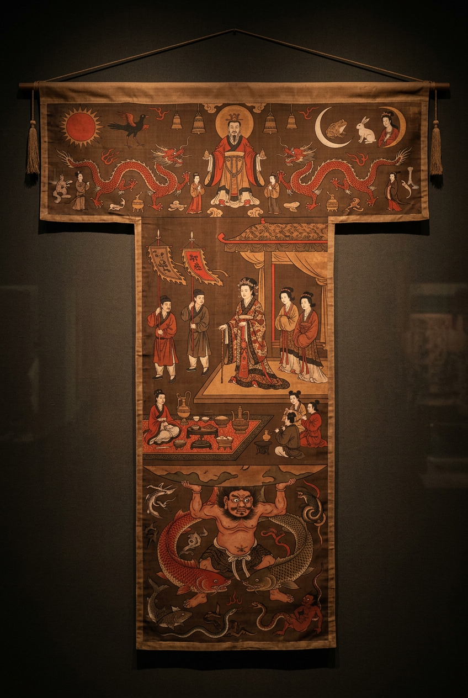

T 形帛画（"非衣"/ 铭旌）
通长 205 cm
上宽 92 cm
下宽 47.7 cm
质地 单层细绢（绢地）
工艺 平涂 + 线描，矿物/植物颜料
出土位置 覆盖于内棺盖板
出土时平铺在辛追夫人内棺盖板之上，上窄下宽呈"T"字形，顶端裹竹轴、两侧缀丝带，四角坠有飘带——是一幅可以高举悬挂的铭旌。画面以细绢为地，以朱砂、石青、石绿、白垩等矿物颜料平涂，以墨线勾勒，分天上、人间、地下三层，呈现汉初人对"宇宙—生死—升仙"的完整认知体系。
定名之争
《一号墓发掘报告》出版前，围绕此画曾出现"非衣""飞衣""幠""画荒""魂幡""铭旌"等多种命名方案。发掘报告据《仪礼·士丧礼》"为铭，各以其物……书铭于末曰：某氏某之柩"的记载，定名为铭旌；而"非衣"一说源自遣策（随葬品清单），"非衣一，长丈二尺"的记载与此帛画尺寸基本吻合。学界目前以"T 形帛画"作为通用名，功能定性为引魂升天的铭旌。
图像三界解读
天上（T 的横梁部分）：正中为烛龙/女娲形象，人首蛇身，身下月桂与蟾蜍、玉兔代表"月"，对称位置的扶桑树上栖九日（另有一日被金乌衔起），加"羲和浴日"母题。两侧有司阍神人拱手相迎，下方是双豹把守的天门。
人间（T 的竖干上段）：居中一位拄杖老妇人由三侍女搀扶，前有两跪迎者。此即辛追夫人升仙途中的自画像——是中国绘画史上最早有明确对应墓主的"肖像"之一。人物下方绘帷幔与玉璧，璧下为祭祀场景：礼器列陈，供台上置鼎、壶、盘，两侧孝子奠祭。
地下（T 的竖干下段）：一赤身巨人站立于交缠的双鱼与鳌（大龟）之上，双手擎托大地——即"地神"或"禺强"形象。两侧鸱鸮、龟蛇相搏，象征阴间的幽暗与威吓。
工艺细节
底绢为单层平纹细绢，丝细密，矿物颜料经两千年仍艳丽。墨线用中锋勾勒，线条富有弹性与提按变化，是"春蚕吐丝描"的早期实例；人物造型已有比例意识，开始摆脱先秦图案化倾向，是中国早期写实人物画的代表作。
现场看什么 ① 最顶端烛龙/女娲的人首蛇身（注意蛇身的鳞甲细节）；② 太阳树上的九只金乌；③ 辛追夫人手中的拐杖造型——竹制、顶端包银；④ 地下巨人脚下那两条交缠的鱼的眼睛，是画家最精妙的一处。
为什么珍贵 ① 现存最早、最完整、保存最好的西汉帛画；② 首批禁止出境文物（1994 年国家文物局公布）；③ 图像内容涵盖神话、宗教、礼仪、肖像四个维度，被视为中国绘画史的"起点级"作品；④ 三号墓出土的另一幅 T 形帛画构图几乎一致，证明这是汉初宗室丧仪的程式化铭旌，而非孤例——这一点对理解汉代礼制极为关键。